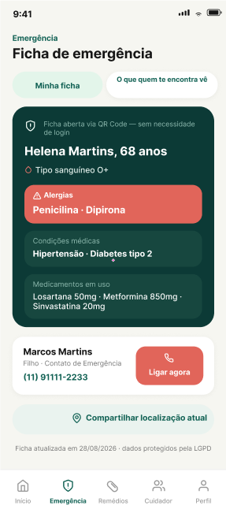
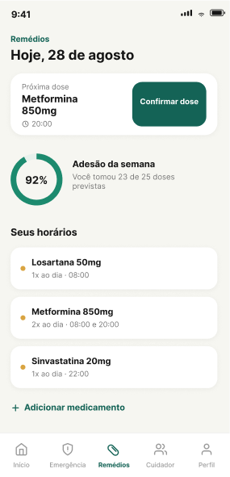

Sistema BioShield
Plataforma de saúde preventiva com ficha médica de emergência via QR Code, que qualquer pessoa acessa pela câmera do celular sem instalar nada, junto com lembretes de medicamentos com confirmação de dose e um modo cuidador para a família acompanhar à distância.
Em desenvolvimento: backend em TypeScript com Express e MySQL, seguindo arquitetura em camadas.
Ver no GitHub

